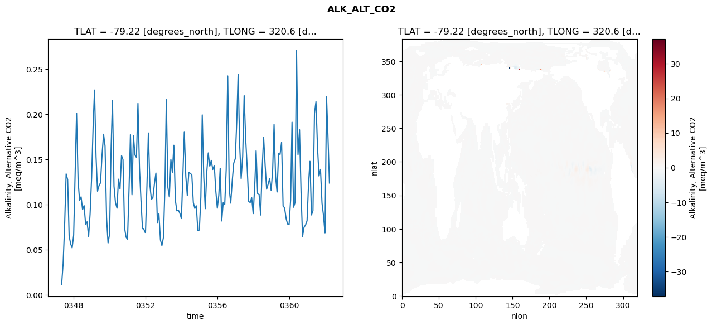
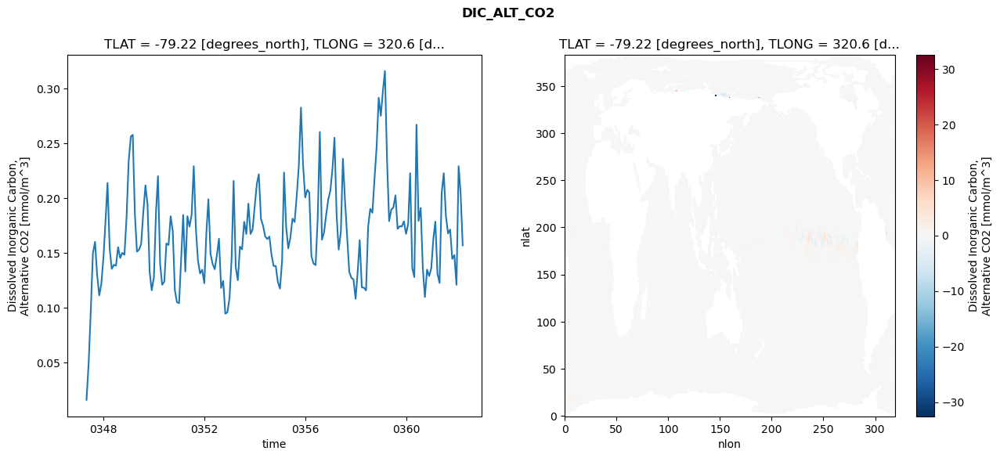
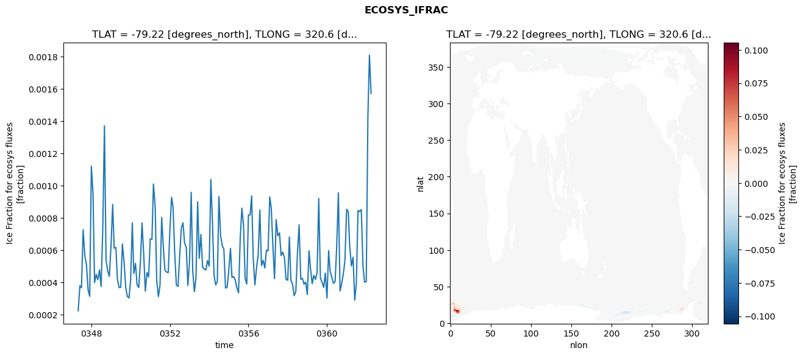
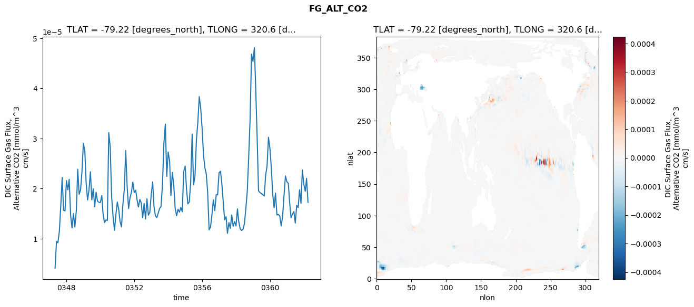

glb-dor_North_Atlantic_basin_000_1999-04-01_00001#
Show code cell source Hide code cell source
import xarray as xr
import matplotlib.pyplot as plt
Show code cell source Hide code cell source
zarr_store = "/path/to/zarr/store"
# Parameters
zarr_store = "/global/cfs/projectdirs/m4746/Projects/Ocean-CDR-Atlas-v0/data/validation/smyle.cdr-atlas-v0.glb-dor_North_Atlantic_basin_000_1999-04-01_00001.001.validation.zarr"
Show code cell source Hide code cell source
%%time
ds_o = xr.open_zarr(zarr_store).compute()
ds_o
CPU times: user 604 ms, sys: 405 ms, total: 1.01 s
Wall time: 1.15 s
<xarray.Dataset> Size: 2MB
Dimensions: (nlat: 384, nlon: 320, time: 180)
Coordinates:
TLAT float64 8B -79.22
TLONG float64 8B 320.6
ULAT float64 8B -78.95
ULONG float64 8B 321.1
* time (time) object 1kB 0347-05-01 00:00:00 ... 0362-04-01 0...
z_t float32 4B 500.0
Dimensions without coordinates: nlat, nlon
Data variables:
ALK_ALT_CO2_diff (nlat, nlon) float32 492kB nan nan nan ... nan nan nan
ALK_ALT_CO2_rmse (time) float64 1kB 0.01151 0.03501 ... 0.1771 0.1239
DIC_ALT_CO2_diff (nlat, nlon) float32 492kB nan nan nan ... nan nan nan
DIC_ALT_CO2_rmse (time) float64 1kB 0.01615 0.0498 ... 0.2053 0.157
ECOSYS_IFRAC_diff (nlat, nlon) float32 492kB nan nan nan ... nan nan nan
ECOSYS_IFRAC_rmse (time) float64 1kB 0.0002255 0.0003809 ... 0.001572
FG_ALT_CO2_diff (nlat, nlon) float32 492kB nan nan nan ... nan nan nan
FG_ALT_CO2_rmse (time) float64 1kB 4.162e-06 9.463e-06 ... 1.727e-05xarray.Dataset
- nlat: 384
- nlon: 320
- time: 180
- TLAT()float64-79.22
- long_name :
- array of t-grid latitudes
- units :
- degrees_north
array(-79.22052261)
- TLONG()float64320.6
- long_name :
- array of t-grid longitudes
- units :
- degrees_east
array(320.56250892)
- ULAT()float64-78.95
- long_name :
- array of u-grid latitudes
- units :
- degrees_north
array(-78.95289509)
- ULONG()float64321.1
- long_name :
- array of u-grid longitudes
- units :
- degrees_east
array(321.12500894)
- time(time)object0347-05-01 00:00:00 ... 0362-04-...
- bounds :
- time_bound
- long_name :
- time
array([cftime.DatetimeNoLeap(347, 5, 1, 0, 0, 0, 0, has_year_zero=True), cftime.DatetimeNoLeap(347, 6, 1, 0, 0, 0, 0, has_year_zero=True), cftime.DatetimeNoLeap(347, 7, 1, 0, 0, 0, 0, has_year_zero=True), cftime.DatetimeNoLeap(347, 8, 1, 0, 0, 0, 0, has_year_zero=True), cftime.DatetimeNoLeap(347, 9, 1, 0, 0, 0, 0, has_year_zero=True), cftime.DatetimeNoLeap(347, 10, 1, 0, 0, 0, 0, has_year_zero=True), cftime.DatetimeNoLeap(347, 11, 1, 0, 0, 0, 0, has_year_zero=True), cftime.DatetimeNoLeap(347, 12, 1, 0, 0, 0, 0, has_year_zero=True), cftime.DatetimeNoLeap(348, 1, 1, 0, 0, 0, 0, has_year_zero=True), cftime.DatetimeNoLeap(348, 2, 1, 0, 0, 0, 0, has_year_zero=True), cftime.DatetimeNoLeap(348, 3, 1, 0, 0, 0, 0, has_year_zero=True), cftime.DatetimeNoLeap(348, 4, 1, 0, 0, 0, 0, has_year_zero=True), cftime.DatetimeNoLeap(348, 5, 1, 0, 0, 0, 0, has_year_zero=True), cftime.DatetimeNoLeap(348, 6, 1, 0, 0, 0, 0, has_year_zero=True), cftime.DatetimeNoLeap(348, 7, 1, 0, 0, 0, 0, has_year_zero=True), cftime.DatetimeNoLeap(348, 8, 1, 0, 0, 0, 0, has_year_zero=True), cftime.DatetimeNoLeap(348, 9, 1, 0, 0, 0, 0, has_year_zero=True), cftime.DatetimeNoLeap(348, 10, 1, 0, 0, 0, 0, has_year_zero=True), cftime.DatetimeNoLeap(348, 11, 1, 0, 0, 0, 0, has_year_zero=True), cftime.DatetimeNoLeap(348, 12, 1, 0, 0, 0, 0, has_year_zero=True), cftime.DatetimeNoLeap(349, 1, 1, 0, 0, 0, 0, has_year_zero=True), cftime.DatetimeNoLeap(349, 2, 1, 0, 0, 0, 0, has_year_zero=True), cftime.DatetimeNoLeap(349, 3, 1, 0, 0, 0, 0, has_year_zero=True), cftime.DatetimeNoLeap(349, 4, 1, 0, 0, 0, 0, has_year_zero=True), cftime.DatetimeNoLeap(349, 5, 1, 0, 0, 0, 0, has_year_zero=True), cftime.DatetimeNoLeap(349, 6, 1, 0, 0, 0, 0, has_year_zero=True), cftime.DatetimeNoLeap(349, 7, 1, 0, 0, 0, 0, has_year_zero=True), cftime.DatetimeNoLeap(349, 8, 1, 0, 0, 0, 0, has_year_zero=True), cftime.DatetimeNoLeap(349, 9, 1, 0, 0, 0, 0, has_year_zero=True), cftime.DatetimeNoLeap(349, 10, 1, 0, 0, 0, 0, has_year_zero=True), cftime.DatetimeNoLeap(349, 11, 1, 0, 0, 0, 0, has_year_zero=True), cftime.DatetimeNoLeap(349, 12, 1, 0, 0, 0, 0, has_year_zero=True), cftime.DatetimeNoLeap(350, 1, 1, 0, 0, 0, 0, has_year_zero=True), cftime.DatetimeNoLeap(350, 2, 1, 0, 0, 0, 0, has_year_zero=True), cftime.DatetimeNoLeap(350, 3, 1, 0, 0, 0, 0, has_year_zero=True), cftime.DatetimeNoLeap(350, 4, 1, 0, 0, 0, 0, has_year_zero=True), cftime.DatetimeNoLeap(350, 5, 1, 0, 0, 0, 0, has_year_zero=True), cftime.DatetimeNoLeap(350, 6, 1, 0, 0, 0, 0, has_year_zero=True), cftime.DatetimeNoLeap(350, 7, 1, 0, 0, 0, 0, has_year_zero=True), cftime.DatetimeNoLeap(350, 8, 1, 0, 0, 0, 0, has_year_zero=True), cftime.DatetimeNoLeap(350, 9, 1, 0, 0, 0, 0, has_year_zero=True), cftime.DatetimeNoLeap(350, 10, 1, 0, 0, 0, 0, has_year_zero=True), cftime.DatetimeNoLeap(350, 11, 1, 0, 0, 0, 0, has_year_zero=True), cftime.DatetimeNoLeap(350, 12, 1, 0, 0, 0, 0, has_year_zero=True), cftime.DatetimeNoLeap(351, 1, 1, 0, 0, 0, 0, has_year_zero=True), cftime.DatetimeNoLeap(351, 2, 1, 0, 0, 0, 0, has_year_zero=True), cftime.DatetimeNoLeap(351, 3, 1, 0, 0, 0, 0, has_year_zero=True), cftime.DatetimeNoLeap(351, 4, 1, 0, 0, 0, 0, has_year_zero=True), cftime.DatetimeNoLeap(351, 5, 1, 0, 0, 0, 0, has_year_zero=True), cftime.DatetimeNoLeap(351, 6, 1, 0, 0, 0, 0, has_year_zero=True), cftime.DatetimeNoLeap(351, 7, 1, 0, 0, 0, 0, has_year_zero=True), cftime.DatetimeNoLeap(351, 8, 1, 0, 0, 0, 0, has_year_zero=True), cftime.DatetimeNoLeap(351, 9, 1, 0, 0, 0, 0, has_year_zero=True), cftime.DatetimeNoLeap(351, 10, 1, 0, 0, 0, 0, has_year_zero=True), cftime.DatetimeNoLeap(351, 11, 1, 0, 0, 0, 0, has_year_zero=True), cftime.DatetimeNoLeap(351, 12, 1, 0, 0, 0, 0, has_year_zero=True), cftime.DatetimeNoLeap(352, 1, 1, 0, 0, 0, 0, has_year_zero=True), cftime.DatetimeNoLeap(352, 2, 1, 0, 0, 0, 0, has_year_zero=True), cftime.DatetimeNoLeap(352, 3, 1, 0, 0, 0, 0, has_year_zero=True), cftime.DatetimeNoLeap(352, 4, 1, 0, 0, 0, 0, has_year_zero=True), cftime.DatetimeNoLeap(352, 5, 1, 0, 0, 0, 0, has_year_zero=True), cftime.DatetimeNoLeap(352, 6, 1, 0, 0, 0, 0, has_year_zero=True), cftime.DatetimeNoLeap(352, 7, 1, 0, 0, 0, 0, has_year_zero=True), cftime.DatetimeNoLeap(352, 8, 1, 0, 0, 0, 0, has_year_zero=True), cftime.DatetimeNoLeap(352, 9, 1, 0, 0, 0, 0, has_year_zero=True), cftime.DatetimeNoLeap(352, 10, 1, 0, 0, 0, 0, has_year_zero=True), cftime.DatetimeNoLeap(352, 11, 1, 0, 0, 0, 0, has_year_zero=True), cftime.DatetimeNoLeap(352, 12, 1, 0, 0, 0, 0, has_year_zero=True), cftime.DatetimeNoLeap(353, 1, 1, 0, 0, 0, 0, has_year_zero=True), cftime.DatetimeNoLeap(353, 2, 1, 0, 0, 0, 0, has_year_zero=True), cftime.DatetimeNoLeap(353, 3, 1, 0, 0, 0, 0, has_year_zero=True), cftime.DatetimeNoLeap(353, 4, 1, 0, 0, 0, 0, has_year_zero=True), cftime.DatetimeNoLeap(353, 5, 1, 0, 0, 0, 0, has_year_zero=True), cftime.DatetimeNoLeap(353, 6, 1, 0, 0, 0, 0, has_year_zero=True), cftime.DatetimeNoLeap(353, 7, 1, 0, 0, 0, 0, has_year_zero=True), cftime.DatetimeNoLeap(353, 8, 1, 0, 0, 0, 0, has_year_zero=True), cftime.DatetimeNoLeap(353, 9, 1, 0, 0, 0, 0, has_year_zero=True), cftime.DatetimeNoLeap(353, 10, 1, 0, 0, 0, 0, has_year_zero=True), cftime.DatetimeNoLeap(353, 11, 1, 0, 0, 0, 0, has_year_zero=True), cftime.DatetimeNoLeap(353, 12, 1, 0, 0, 0, 0, has_year_zero=True), cftime.DatetimeNoLeap(354, 1, 1, 0, 0, 0, 0, has_year_zero=True), cftime.DatetimeNoLeap(354, 2, 1, 0, 0, 0, 0, has_year_zero=True), cftime.DatetimeNoLeap(354, 3, 1, 0, 0, 0, 0, has_year_zero=True), cftime.DatetimeNoLeap(354, 4, 1, 0, 0, 0, 0, has_year_zero=True), cftime.DatetimeNoLeap(354, 5, 1, 0, 0, 0, 0, has_year_zero=True), cftime.DatetimeNoLeap(354, 6, 1, 0, 0, 0, 0, has_year_zero=True), cftime.DatetimeNoLeap(354, 7, 1, 0, 0, 0, 0, has_year_zero=True), cftime.DatetimeNoLeap(354, 8, 1, 0, 0, 0, 0, has_year_zero=True), cftime.DatetimeNoLeap(354, 9, 1, 0, 0, 0, 0, has_year_zero=True), cftime.DatetimeNoLeap(354, 10, 1, 0, 0, 0, 0, has_year_zero=True), cftime.DatetimeNoLeap(354, 11, 1, 0, 0, 0, 0, has_year_zero=True), cftime.DatetimeNoLeap(354, 12, 1, 0, 0, 0, 0, has_year_zero=True), cftime.DatetimeNoLeap(355, 1, 1, 0, 0, 0, 0, has_year_zero=True), cftime.DatetimeNoLeap(355, 2, 1, 0, 0, 0, 0, has_year_zero=True), cftime.DatetimeNoLeap(355, 3, 1, 0, 0, 0, 0, has_year_zero=True), cftime.DatetimeNoLeap(355, 4, 1, 0, 0, 0, 0, has_year_zero=True), cftime.DatetimeNoLeap(355, 5, 1, 0, 0, 0, 0, has_year_zero=True), cftime.DatetimeNoLeap(355, 6, 1, 0, 0, 0, 0, has_year_zero=True), cftime.DatetimeNoLeap(355, 7, 1, 0, 0, 0, 0, has_year_zero=True), cftime.DatetimeNoLeap(355, 8, 1, 0, 0, 0, 0, has_year_zero=True), cftime.DatetimeNoLeap(355, 9, 1, 0, 0, 0, 0, has_year_zero=True), cftime.DatetimeNoLeap(355, 10, 1, 0, 0, 0, 0, has_year_zero=True), cftime.DatetimeNoLeap(355, 11, 1, 0, 0, 0, 0, has_year_zero=True), cftime.DatetimeNoLeap(355, 12, 1, 0, 0, 0, 0, has_year_zero=True), cftime.DatetimeNoLeap(356, 1, 1, 0, 0, 0, 0, has_year_zero=True), cftime.DatetimeNoLeap(356, 2, 1, 0, 0, 0, 0, has_year_zero=True), cftime.DatetimeNoLeap(356, 3, 1, 0, 0, 0, 0, has_year_zero=True), cftime.DatetimeNoLeap(356, 4, 1, 0, 0, 0, 0, has_year_zero=True), cftime.DatetimeNoLeap(356, 5, 1, 0, 0, 0, 0, has_year_zero=True), cftime.DatetimeNoLeap(356, 6, 1, 0, 0, 0, 0, has_year_zero=True), cftime.DatetimeNoLeap(356, 7, 1, 0, 0, 0, 0, has_year_zero=True), cftime.DatetimeNoLeap(356, 8, 1, 0, 0, 0, 0, has_year_zero=True), cftime.DatetimeNoLeap(356, 9, 1, 0, 0, 0, 0, has_year_zero=True), cftime.DatetimeNoLeap(356, 10, 1, 0, 0, 0, 0, has_year_zero=True), cftime.DatetimeNoLeap(356, 11, 1, 0, 0, 0, 0, has_year_zero=True), cftime.DatetimeNoLeap(356, 12, 1, 0, 0, 0, 0, has_year_zero=True), cftime.DatetimeNoLeap(357, 1, 1, 0, 0, 0, 0, has_year_zero=True), cftime.DatetimeNoLeap(357, 2, 1, 0, 0, 0, 0, has_year_zero=True), cftime.DatetimeNoLeap(357, 3, 1, 0, 0, 0, 0, has_year_zero=True), cftime.DatetimeNoLeap(357, 4, 1, 0, 0, 0, 0, has_year_zero=True), cftime.DatetimeNoLeap(357, 5, 1, 0, 0, 0, 0, has_year_zero=True), cftime.DatetimeNoLeap(357, 6, 1, 0, 0, 0, 0, has_year_zero=True), cftime.DatetimeNoLeap(357, 7, 1, 0, 0, 0, 0, has_year_zero=True), cftime.DatetimeNoLeap(357, 8, 1, 0, 0, 0, 0, has_year_zero=True), cftime.DatetimeNoLeap(357, 9, 1, 0, 0, 0, 0, has_year_zero=True), cftime.DatetimeNoLeap(357, 10, 1, 0, 0, 0, 0, has_year_zero=True), cftime.DatetimeNoLeap(357, 11, 1, 0, 0, 0, 0, has_year_zero=True), cftime.DatetimeNoLeap(357, 12, 1, 0, 0, 0, 0, has_year_zero=True), cftime.DatetimeNoLeap(358, 1, 1, 0, 0, 0, 0, has_year_zero=True), cftime.DatetimeNoLeap(358, 2, 1, 0, 0, 0, 0, has_year_zero=True), cftime.DatetimeNoLeap(358, 3, 1, 0, 0, 0, 0, has_year_zero=True), cftime.DatetimeNoLeap(358, 4, 1, 0, 0, 0, 0, has_year_zero=True), cftime.DatetimeNoLeap(358, 5, 1, 0, 0, 0, 0, has_year_zero=True), cftime.DatetimeNoLeap(358, 6, 1, 0, 0, 0, 0, has_year_zero=True), cftime.DatetimeNoLeap(358, 7, 1, 0, 0, 0, 0, has_year_zero=True), cftime.DatetimeNoLeap(358, 8, 1, 0, 0, 0, 0, has_year_zero=True), cftime.DatetimeNoLeap(358, 9, 1, 0, 0, 0, 0, has_year_zero=True), cftime.DatetimeNoLeap(358, 10, 1, 0, 0, 0, 0, has_year_zero=True), cftime.DatetimeNoLeap(358, 11, 1, 0, 0, 0, 0, has_year_zero=True), cftime.DatetimeNoLeap(358, 12, 1, 0, 0, 0, 0, has_year_zero=True), cftime.DatetimeNoLeap(359, 1, 1, 0, 0, 0, 0, has_year_zero=True), cftime.DatetimeNoLeap(359, 2, 1, 0, 0, 0, 0, has_year_zero=True), cftime.DatetimeNoLeap(359, 3, 1, 0, 0, 0, 0, has_year_zero=True), cftime.DatetimeNoLeap(359, 4, 1, 0, 0, 0, 0, has_year_zero=True), cftime.DatetimeNoLeap(359, 5, 1, 0, 0, 0, 0, has_year_zero=True), cftime.DatetimeNoLeap(359, 6, 1, 0, 0, 0, 0, has_year_zero=True), cftime.DatetimeNoLeap(359, 7, 1, 0, 0, 0, 0, has_year_zero=True), cftime.DatetimeNoLeap(359, 8, 1, 0, 0, 0, 0, has_year_zero=True), cftime.DatetimeNoLeap(359, 9, 1, 0, 0, 0, 0, has_year_zero=True), cftime.DatetimeNoLeap(359, 10, 1, 0, 0, 0, 0, has_year_zero=True), cftime.DatetimeNoLeap(359, 11, 1, 0, 0, 0, 0, has_year_zero=True), cftime.DatetimeNoLeap(359, 12, 1, 0, 0, 0, 0, has_year_zero=True), cftime.DatetimeNoLeap(360, 1, 1, 0, 0, 0, 0, has_year_zero=True), cftime.DatetimeNoLeap(360, 2, 1, 0, 0, 0, 0, has_year_zero=True), cftime.DatetimeNoLeap(360, 3, 1, 0, 0, 0, 0, has_year_zero=True), cftime.DatetimeNoLeap(360, 4, 1, 0, 0, 0, 0, has_year_zero=True), cftime.DatetimeNoLeap(360, 5, 1, 0, 0, 0, 0, has_year_zero=True), cftime.DatetimeNoLeap(360, 6, 1, 0, 0, 0, 0, has_year_zero=True), cftime.DatetimeNoLeap(360, 7, 1, 0, 0, 0, 0, has_year_zero=True), cftime.DatetimeNoLeap(360, 8, 1, 0, 0, 0, 0, has_year_zero=True), cftime.DatetimeNoLeap(360, 9, 1, 0, 0, 0, 0, has_year_zero=True), cftime.DatetimeNoLeap(360, 10, 1, 0, 0, 0, 0, has_year_zero=True), cftime.DatetimeNoLeap(360, 11, 1, 0, 0, 0, 0, has_year_zero=True), cftime.DatetimeNoLeap(360, 12, 1, 0, 0, 0, 0, has_year_zero=True), cftime.DatetimeNoLeap(361, 1, 1, 0, 0, 0, 0, has_year_zero=True), cftime.DatetimeNoLeap(361, 2, 1, 0, 0, 0, 0, has_year_zero=True), cftime.DatetimeNoLeap(361, 3, 1, 0, 0, 0, 0, has_year_zero=True), cftime.DatetimeNoLeap(361, 4, 1, 0, 0, 0, 0, has_year_zero=True), cftime.DatetimeNoLeap(361, 5, 1, 0, 0, 0, 0, has_year_zero=True), cftime.DatetimeNoLeap(361, 6, 1, 0, 0, 0, 0, has_year_zero=True), cftime.DatetimeNoLeap(361, 7, 1, 0, 0, 0, 0, has_year_zero=True), cftime.DatetimeNoLeap(361, 8, 1, 0, 0, 0, 0, has_year_zero=True), cftime.DatetimeNoLeap(361, 9, 1, 0, 0, 0, 0, has_year_zero=True), cftime.DatetimeNoLeap(361, 10, 1, 0, 0, 0, 0, has_year_zero=True), cftime.DatetimeNoLeap(361, 11, 1, 0, 0, 0, 0, has_year_zero=True), cftime.DatetimeNoLeap(361, 12, 1, 0, 0, 0, 0, has_year_zero=True), cftime.DatetimeNoLeap(362, 1, 1, 0, 0, 0, 0, has_year_zero=True), cftime.DatetimeNoLeap(362, 2, 1, 0, 0, 0, 0, has_year_zero=True), cftime.DatetimeNoLeap(362, 3, 1, 0, 0, 0, 0, has_year_zero=True), cftime.DatetimeNoLeap(362, 4, 1, 0, 0, 0, 0, has_year_zero=True)], dtype=object) - z_t()float32500.0
- long_name :
- depth from surface to midpoint of layer
- positive :
- down
- units :
- centimeters
- valid_max :
- 537500.0
- valid_min :
- 500.0
array(500., dtype=float32)
- ALK_ALT_CO2_diff(nlat, nlon)float32nan nan nan nan ... nan nan nan nan
- cell_methods :
- time: mean
- grid_loc :
- 3111
- long_name :
- Alkalinity, Alternative CO2
- units :
- meq/m^3
array([[ nan, nan, nan, ..., nan, nan, nan], [ nan, nan, nan, ..., nan, nan, nan], [-0.0090332 , -0.00610352, -0.00195312, ..., nan, nan, nan], ..., [ nan, nan, nan, ..., nan, nan, nan], [ nan, nan, nan, ..., nan, nan, nan], [ nan, nan, nan, ..., nan, nan, nan]], dtype=float32) - ALK_ALT_CO2_rmse(time)float640.01151 0.03501 ... 0.1771 0.1239
- cell_methods :
- time: mean
- grid_loc :
- 3111
- long_name :
- Alkalinity, Alternative CO2
- units :
- meq/m^3
array([0.0115129 , 0.03501089, 0.07652958, 0.13407922, 0.12771465, 0.06526517, 0.05668669, 0.05224469, 0.06628032, 0.13803822, 0.2012194 , 0.12644595, 0.10471591, 0.10873274, 0.09456412, 0.0989997 , 0.07832999, 0.0810722 , 0.06488211, 0.08997673, 0.12993914, 0.18778394, 0.22681923, 0.15318824, 0.1149436 , 0.12115 , 0.12420032, 0.15503263, 0.17797292, 0.16500511, 0.08553083, 0.05771298, 0.06735378, 0.16302001, 0.21505355, 0.12049872, 0.10225745, 0.09616023, 0.12820896, 0.11746292, 0.1543914 , 0.14984638, 0.07493704, 0.06422359, 0.06181988, 0.11799412, 0.17756912, 0.11096753, 0.17656311, 0.15496272, 0.15234859, 0.21208044, 0.14088765, 0.1053261 , 0.07369944, 0.07257494, 0.06864601, 0.12311691, 0.17935543, 0.12150732, 0.1058125 , 0.1078971 , 0.12262014, 0.13507211, 0.07966957, 0.08995883, 0.06091331, 0.05479442, 0.06374768, 0.12073973, 0.21620378, 0.11927493, 0.10858682, 0.14998416, 0.13583237, 0.16576259, 0.10463458, 0.09320992, 0.09409868, 0.09043498, 0.08470895, 0.13368247, 0.18084198, 0.1313225 , 0.11024179, 0.13579083, 0.13462798, 0.13311298, 0.10238921, 0.09589785, 0.0987586 , 0.07150515, 0.07194941, 0.1083869 , 0.1993643 , 0.13074103, 0.09562101, 0.13614178, 0.15729521, 0.14266642, 0.14903805, 0.13896655, 0.14338429, 0.11552925, 0.09613476, 0.11067837, 0.140219 , 0.08202346, 0.10219569, 0.10021729, 0.13900779, 0.24247599, 0.11686545, 0.10177067, 0.12655997, 0.14597049, 0.15080871, 0.19266237, 0.24444642, 0.16586971, 0.12893634, 0.15324442, 0.22067412, 0.17292834, 0.141043 , 0.10363249, 0.10241079, 0.10785781, 0.09019048, 0.12101282, 0.15958771, 0.11227255, 0.1110493 , 0.08859676, 0.13854918, 0.17449607, 0.14350503, 0.11712887, 0.1228226 , 0.12899569, 0.11572372, 0.13913819, 0.18876472, 0.13115678, 0.11403705, 0.15671689, 0.15561249, 0.16921319, 0.09840935, 0.09669159, 0.08471247, 0.07866197, 0.07799712, 0.10538146, 0.19129467, 0.09721532, 0.10214894, 0.27063871, 0.15547506, 0.18290354, 0.11337544, 0.0648036 , 0.07511893, 0.07750367, 0.08222947, 0.12378867, 0.14797653, 0.08867903, 0.09346961, 0.20111196, 0.21396227, 0.16398025, 0.1317213 , 0.13910495, 0.10161568, 0.08805986, 0.0682844 , 0.21931233, 0.17706696, 0.12394673]) - DIC_ALT_CO2_diff(nlat, nlon)float32nan nan nan nan ... nan nan nan nan
- cell_methods :
- time: mean
- grid_loc :
- 3111
- long_name :
- Dissolved Inorganic Carbon, Alternative CO2
- units :
- mmol/m^3
array([[ nan, nan, nan, ..., nan, nan, nan], [ nan, nan, nan, ..., nan, nan, nan], [-0.09008789, -0.07568359, -0.06323242, ..., nan, nan, nan], ..., [ nan, nan, nan, ..., nan, nan, nan], [ nan, nan, nan, ..., nan, nan, nan], [ nan, nan, nan, ..., nan, nan, nan]], dtype=float32) - DIC_ALT_CO2_rmse(time)float640.01615 0.0498 ... 0.2053 0.157
- cell_methods :
- time: mean
- grid_loc :
- 3111
- long_name :
- Dissolved Inorganic Carbon, Alternative CO2
- units :
- mmol/m^3
array([0.01614669, 0.04979943, 0.09644393, 0.14979145, 0.1601968 , 0.13043894, 0.11139039, 0.12167273, 0.14603754, 0.18054347, 0.21396626, 0.15423006, 0.13556646, 0.13921555, 0.13846437, 0.1553416 , 0.14546863, 0.1501658 , 0.14841839, 0.18193024, 0.23372657, 0.25622602, 0.25783195, 0.18574472, 0.15125845, 0.15316083, 0.15837468, 0.18734037, 0.21169216, 0.19408584, 0.13259654, 0.11604573, 0.12770112, 0.18790947, 0.22010277, 0.14007275, 0.12113102, 0.12398055, 0.15875592, 0.15734823, 0.18355963, 0.17000978, 0.11587963, 0.1052164 , 0.10424807, 0.14616473, 0.1847232 , 0.13316411, 0.18352325, 0.17408026, 0.18491502, 0.22922567, 0.17232772, 0.14301778, 0.13135983, 0.13480337, 0.12249251, 0.17009443, 0.19904824, 0.14921397, 0.14011121, 0.13526266, 0.14766018, 0.1630416 , 0.11823487, 0.12462916, 0.09470273, 0.09598381, 0.10902343, 0.14649351, 0.21584008, 0.13697711, 0.12522094, 0.15585843, 0.15334255, 0.1784493 , 0.16739342, 0.19508222, 0.16738169, 0.17148247, 0.19315361, 0.21341481, 0.22188091, 0.18116072, 0.17504835, 0.16526079, 0.16278672, 0.16502995, 0.14841766, 0.13822832, 0.13823454, 0.12374512, 0.11757505, 0.14325342, 0.22339953, 0.17341781, 0.15438287, 0.16422353, 0.18137497, 0.17831196, 0.20247313, 0.22974569, 0.28264646, 0.2308644 , 0.20071542, 0.20771243, 0.20515462, 0.14732177, 0.14045305, 0.13901798, 0.18141152, 0.26046786, 0.1622194 , 0.16871729, 0.18509705, 0.19879919, 0.20719347, 0.22768663, 0.25514024, 0.18430148, 0.15314872, 0.16901608, 0.23594868, 0.19705863, 0.16478636, 0.13278594, 0.12735531, 0.12599238, 0.10831558, 0.13385955, 0.16180064, 0.11875917, 0.11838699, 0.1159064 , 0.17373303, 0.1903443 , 0.18677053, 0.21724665, 0.24676149, 0.29171263, 0.27516713, 0.29841389, 0.31597576, 0.23451199, 0.17917056, 0.18958263, 0.1914519 , 0.20261444, 0.17206039, 0.17443571, 0.17429078, 0.17894058, 0.1674754 , 0.17660599, 0.22275843, 0.13620461, 0.12815351, 0.26708666, 0.17931332, 0.19109706, 0.13604246, 0.1099109 , 0.13490153, 0.12903229, 0.13603568, 0.16351265, 0.17857117, 0.13093244, 0.1227597 , 0.205 , 0.22279979, 0.18373011, 0.16783491, 0.17142812, 0.14468928, 0.14816287, 0.12103698, 0.22918208, 0.20527434, 0.15702341]) - ECOSYS_IFRAC_diff(nlat, nlon)float32nan nan nan nan ... nan nan nan nan
- cell_methods :
- time: mean
- grid_loc :
- 2110
- long_name :
- Ice Fraction for ecosys fluxes
- units :
- fraction
array([[ nan, nan, nan, ..., nan, nan, nan], [ nan, nan, nan, ..., nan, nan, nan], [-0.00084478, -0.00133616, -0.00300372, ..., nan, nan, nan], ..., [ nan, nan, nan, ..., nan, nan, nan], [ nan, nan, nan, ..., nan, nan, nan], [ nan, nan, nan, ..., nan, nan, nan]], dtype=float32) - ECOSYS_IFRAC_rmse(time)float640.0002255 0.0003809 ... 0.001572
- cell_methods :
- time: mean
- grid_loc :
- 2110
- long_name :
- Ice Fraction for ecosys fluxes
- units :
- fraction
array([0.00022552, 0.00038086, 0.00036835, 0.0007277 , 0.00056649, 0.00051224, 0.00035542, 0.00031562, 0.00112112, 0.00094791, 0.00040056, 0.00045103, 0.00041801, 0.00047889, 0.00037568, 0.00072944, 0.00137201, 0.00054008, 0.00047313, 0.00043833, 0.00062806, 0.00088385, 0.00061349, 0.00061808, 0.00041771, 0.00036937, 0.00037042, 0.00063966, 0.00052696, 0.00037137, 0.00031388, 0.00030494, 0.00041636, 0.00077033, 0.00045629, 0.00051915, 0.00038555, 0.0003697 , 0.00052101, 0.00077008, 0.00057546, 0.00034675, 0.00046222, 0.00043576, 0.00067108, 0.00066852, 0.00101077, 0.00087714, 0.00041283, 0.00031347, 0.00038397, 0.00080445, 0.00061798, 0.00047556, 0.00046507, 0.00046222, 0.00072965, 0.00092899, 0.00086587, 0.000577 , 0.00038585, 0.00037582, 0.00056126, 0.00073641, 0.0007708 , 0.00064518, 0.00061768, 0.00038227, 0.00053293, 0.00095961, 0.00047269, 0.00034348, 0.00043082, 0.00090035, 0.00055018, 0.00069844, 0.0004958 , 0.00048462, 0.00047879, 0.00053686, 0.00050166, 0.00103908, 0.00079581, 0.0004507 , 0.00038559, 0.00040555, 0.0009327 , 0.0006928 , 0.00062987, 0.00060797, 0.00036595, 0.00037158, 0.00047753, 0.00061203, 0.0004318 , 0.00043743, 0.00041604, 0.00036613, 0.00033636, 0.00067166, 0.00086153, 0.00075939, 0.00042686, 0.00039131, 0.00081942, 0.00081926, 0.0009373 , 0.00054272, 0.00038583, 0.00049326, 0.00057386, 0.00084982, 0.00050603, 0.00053827, 0.00049077, 0.00060174, 0.0005967 , 0.00093172, 0.00086279, 0.00062276, 0.0004247 , 0.00078995, 0.00069089, 0.00070835, 0.0005678 , 0.00058906, 0.0005557 , 0.00042061, 0.00041483, 0.00068245, 0.00041464, 0.00038893, 0.00031908, 0.00034553, 0.00058136, 0.0007577 , 0.00042089, 0.00042734, 0.00038992, 0.00040368, 0.00032629, 0.0005975 , 0.00048601, 0.00039363, 0.00044598, 0.00041942, 0.00046157, 0.00092072, 0.00042772, 0.00040336, 0.00037005, 0.00045973, 0.00030442, 0.0005983 , 0.00046827, 0.00043477, 0.00039538, 0.00040653, 0.00062484, 0.00095641, 0.0003483 , 0.0003935 , 0.00045421, 0.00053807, 0.00085389, 0.00083888, 0.00061902, 0.00050288, 0.00055778, 0.00029097, 0.00039527, 0.00084711, 0.00084016, 0.00085239, 0.00050555, 0.00040261, 0.00040658, 0.00143362, 0.00180875, 0.00157238]) - FG_ALT_CO2_diff(nlat, nlon)float32nan nan nan nan ... nan nan nan nan
- cell_methods :
- time: mean
- grid_loc :
- 2110
- long_name :
- DIC Surface Gas Flux, Alternative CO2
- units :
- mmol/m^3 cm/s
array([[ nan, nan, nan, ..., nan, nan, nan], [ nan, nan, nan, ..., nan, nan, nan], [5.3230615e-06, 6.3822663e-06, 1.5926023e-05, ..., nan, nan, nan], ..., [ nan, nan, nan, ..., nan, nan, nan], [ nan, nan, nan, ..., nan, nan, nan], [ nan, nan, nan, ..., nan, nan, nan]], dtype=float32) - FG_ALT_CO2_rmse(time)float644.162e-06 9.463e-06 ... 1.727e-05
- cell_methods :
- time: mean
- grid_loc :
- 2110
- long_name :
- DIC Surface Gas Flux, Alternative CO2
- units :
- mmol/m^3 cm/s
array([4.16198017e-06, 9.46275769e-06, 9.19756942e-06, 1.14495397e-05, 1.65639116e-05, 2.22178608e-05, 1.56685292e-05, 1.55646102e-05, 2.16025939e-05, 1.97508102e-05, 2.18520954e-05, 1.46556229e-05, 1.21615740e-05, 1.50197062e-05, 1.23394048e-05, 1.55221623e-05, 2.38426475e-05, 1.88637654e-05, 1.97432576e-05, 2.33599435e-05, 2.90892129e-05, 2.74466357e-05, 2.11278276e-05, 1.77355330e-05, 1.96725347e-05, 2.33448190e-05, 1.77449724e-05, 1.99973617e-05, 1.63765810e-05, 1.92835683e-05, 1.74829392e-05, 1.72717499e-05, 1.72231310e-05, 1.86002953e-05, 1.48783375e-05, 1.31959925e-05, 1.37588427e-05, 1.36532449e-05, 3.11698316e-05, 2.83502756e-05, 1.83654103e-05, 1.45180416e-05, 1.16924765e-05, 1.47472591e-05, 1.73375536e-05, 1.57898167e-05, 1.34559630e-05, 1.23475758e-05, 1.68322836e-05, 1.98330972e-05, 2.76194630e-05, 2.03119564e-05, 1.60234237e-05, 1.81515813e-05, 1.93346853e-05, 2.12850154e-05, 1.92106555e-05, 1.97085678e-05, 1.78158899e-05, 1.63368552e-05, 1.78416992e-05, 1.71351557e-05, 1.41603316e-05, 1.70380505e-05, 1.39304416e-05, 1.79796679e-05, 1.47032325e-05, 1.52519077e-05, 1.88035802e-05, 2.13350036e-05, 1.64746705e-05, 1.45849026e-05, 1.42030576e-05, 1.51252689e-05, 1.60465874e-05, 1.64482742e-05, 2.10067049e-05, 2.90560677e-05, 3.28622345e-05, 2.24344132e-05, ... 2.96790196e-05, 3.31677120e-05, 3.83384644e-05, 3.61552097e-05, 3.20892609e-05, 2.66886678e-05, 2.42278952e-05, 2.29152110e-05, 1.93040139e-05, 1.17957993e-05, 1.23134397e-05, 1.47556686e-05, 1.77721686e-05, 1.55984993e-05, 1.88027911e-05, 1.87378251e-05, 2.31568378e-05, 2.34687314e-05, 2.11286273e-05, 1.73871373e-05, 1.37616061e-05, 1.43977403e-05, 1.10809020e-05, 1.32263800e-05, 1.20632981e-05, 1.47398067e-05, 1.24904903e-05, 1.34252027e-05, 1.25567857e-05, 1.59512179e-05, 1.34383202e-05, 1.19866850e-05, 1.16409618e-05, 1.18817341e-05, 1.29716101e-05, 1.60689442e-05, 1.94875592e-05, 2.62806270e-05, 3.39537110e-05, 4.68201018e-05, 4.53778848e-05, 4.81171943e-05, 4.00484816e-05, 3.02640321e-05, 1.95690578e-05, 1.92054367e-05, 1.90238164e-05, 1.87970979e-05, 1.85209138e-05, 2.26553296e-05, 2.45499317e-05, 3.02411859e-05, 2.80619896e-05, 2.41044856e-05, 1.89759105e-05, 1.61918077e-05, 1.91063228e-05, 1.47486134e-05, 1.48438621e-05, 1.45635759e-05, 1.25603683e-05, 1.44742431e-05, 1.86840662e-05, 2.25290979e-05, 2.13749261e-05, 2.10471569e-05, 1.73395012e-05, 1.41629857e-05, 1.49190812e-05, 1.54370166e-05, 1.31237082e-05, 1.66536649e-05, 1.62184839e-05, 1.97591378e-05, 1.70642334e-05, 2.37295435e-05, 2.08548045e-05, 1.94770161e-05, 2.20441325e-05, 1.72693003e-05])
- timePandasIndex
PandasIndex(CFTimeIndex([0347-05-01 00:00:00, 0347-06-01 00:00:00, 0347-07-01 00:00:00, 0347-08-01 00:00:00, 0347-09-01 00:00:00, 0347-10-01 00:00:00, 0347-11-01 00:00:00, 0347-12-01 00:00:00, 0348-01-01 00:00:00, 0348-02-01 00:00:00, ... 0361-07-01 00:00:00, 0361-08-01 00:00:00, 0361-09-01 00:00:00, 0361-10-01 00:00:00, 0361-11-01 00:00:00, 0361-12-01 00:00:00, 0362-01-01 00:00:00, 0362-02-01 00:00:00, 0362-03-01 00:00:00, 0362-04-01 00:00:00], dtype='object', length=180, calendar='noleap', freq='MS'))
Show code cell source Hide code cell source
variables = [v[:-5] for v in ds_o.variables if "_rmse" in v]
Show code cell source Hide code cell source
plt.rcParams.update({'figure.max_open_warning': 0})
for v in variables:
fig, axs = plt.subplots(1, 2, figsize=(15, 6))
ds_o[f"{v}_rmse"].plot(ax=axs[0])
ds_o[f"{v}_diff"].plot(ax=axs[1])
plt.suptitle(v, fontweight="bold")



